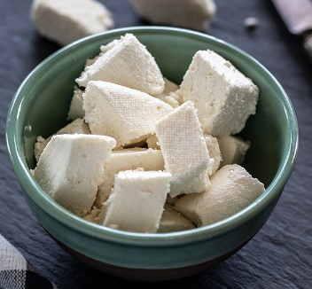
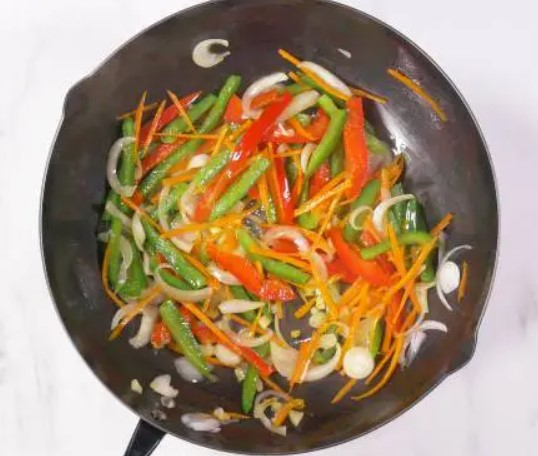

Hakka Noodles
Ingredients:
- Utensils use Frying pan and Bowl
- 300g Noodles
- 400g paneer 
- Red chilli paste
- Vinegar and Soya Sauce
- Oil
- vegetables
- Salt and Ajinomoto to taste
Instructions:
- Boil a large pot of water and cook the noodles according to the instructions.
- Afterwards let the noodles to be dry for some time
- In a separate pan, cook the paneer pieces, onion, and vegetables until the paneer is browned and the onion is soft. 
- Add the soya sauce, vinegar, oregano, basil, salt, and pepper to the pan containing noodles and the vegies. Stir well and let it cook for 5 minutes.
- Serve the cooked noodles in a bowl accordingly.